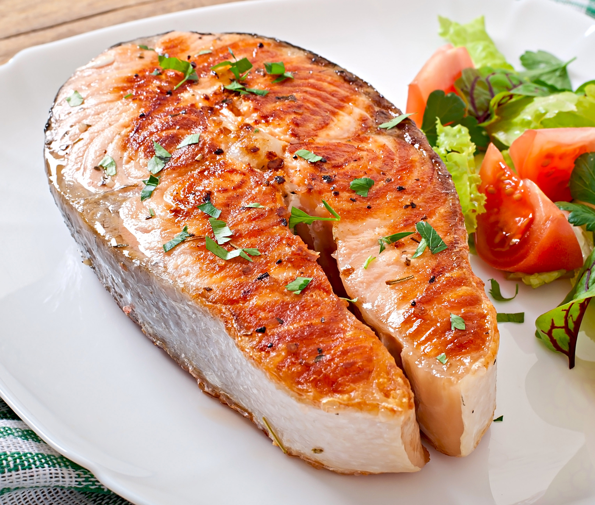

Филе красной рыбы
Рецепт:
- Филе красной рыбы - 1 шт
- Сливочное масло - 4 ст. л.
- Красный лук - 1 шт
- Чеснок - 1-2 зубчиков
- Свежий укроп - 1-2 ст. л.
- Сок лимона - 1 шт(+1 ч. л. лимонный цедры)
- Соль, перец - по вкусу
- Помидоры, листья салата - по желанию(на закуску)
Приготовление
- Разогреть духовку до 450 градусов. Обернуть противень листом фольги. В сотейнике растопить сливочное масло. Добавить измельченный лук и обжаривать на среднем огне около 3 минут, пока он не станет мягким. Добавьте чеснок, лимонную цедру и лимонный сок, обжаривайте еще около минуты.
- Поместите рыбу на противень. Посолите и поперчите по вкусу. Полейте растопленным сливочным маслом, посыпьте половиной измельченного укропа. Запекайте в духовке в течение 12-17 минут, в зависимости от толщины рыбы.